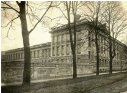
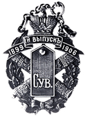

Суворовский кадетский корпус первоначально назывался Варшавским кадетским корпусом (1899-1900), который был учрежден указом императора Николая II после неоднократных обращений офицеров и командования Варшавского военного округа. Первоначально корпус раполагался в варшавской крепости-цитадели в бывших казармах Кексгольмского полка.

Здание кадетского корпуса. Варшава. Почтовая открытка 1900-е гг.
В 1900 г., когда отмечалась 100-летняя годовщина со дня кончины А.В. Суворова, Варшавский кадетский корпус переименовали в Суворовский. Летом того же года в одном из лучших мест польской столицы, на Уяздовской аллее, состоялась торжественная закладка нового здания корпуса.
В 1906 г. в связи с первым выпуском корпусу был присвоен свой марш «Гром победы, раздавайся» - героический полонез композитора И.А. Козловского на стихи Г.Р. Державина, написанный в честь победы А.В. Суворова под Измаилом. В том же году Николай II пожаловал суворовцам знамя.
Особое место в истории Суворовского корпуса принадлежит его первому директору (1899-1908) генерал-лейтенанту С.Н. Лаврову, на плечи которого легла основная тяжесть забот об организации учебного процесса, подборке персонала и строительства здания. С.Н. Лавров был прекрасным педагогом, имевшим опыт ротного командира Пажеского корпуса и командования Киевским военным училищем, в списки которого он был зачислен навечно. Именно при нем Суворовский корпус в течение нескольких лет считался одним из лучших среди кадетских корпусов.
В 1914 г., с началом Первой мировой войны, Суворовский кадетский корпус был переведен в Москву. При этом его младшая рота была размещена в здании 1-го Московского Екатерины II кадетского корпуса, а старшие классы – в Сокольниках, в казармах Гренадерского саперного батальона.
К началу 1915 г. в корпусе был налажен нормальный учебный процесс и организована вполне нормальная размеренная жизнь, которая то и дело нарушалась побегами кадет на фронт.

Жетон 1-го выпуска Суворовского кадетского корпуса. 1906 г
В ноябре 1917 г. в корпус поступил приказ Московского военно-революционного комитета о переходе к нему всей полноты власти. В корпус был назначен комиссар.
В начале апреля 1918 г. директор корпуса генерал-майор В.В. Носов получил из Главного управления военно-учебных заведений уведомление о том, что учебный год может на его усмотрение быть окончен раньше обычного. В.В. Носов решил воспользоваться этим и провел досрочную церемонию выпуска. Кадетский духовой оркестр исполнил корпусной марш «Гром победы, раздавайся» и кадет были вручены аттестаты об окончании корпуса.
На этом Суворовский кадетский корпус прекратил свое существование.
В эмиграции кадеты-сувовровцы были одной из наиболее сплоченных групп среди всех выпускников кадетских корпусов России. С 1 октября и до своей кончины Почетным Председателем Совета ветеранов Суворовского кадетского корпуса была великая княжна Вера Константиновна, младшая дочь великого князя Константина Константиновича